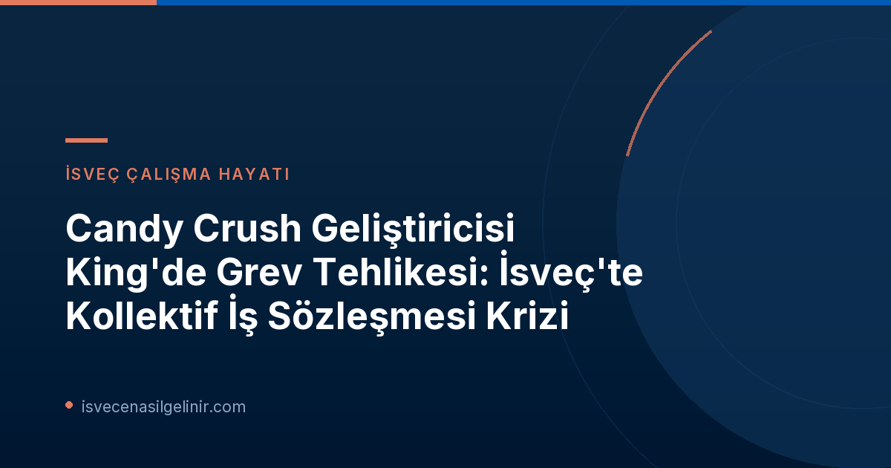

İsveç'te Kollektif İş Sözleşmeleri Neden Önemli?
İsveç iş piyasası modeli, işverenler ve sendikalar arasındaki güçlü müzakere süreçlerine dayanan "İsveç Modeli" olarak bilinir. Bu modelin temel taşlarından biri de kollektif iş sözleşmeleridir (kollektivavtal). Kollektif sözleşmeler, belirli bir sektör veya şirket bünyesindeki çalışanların ücret, çalışma saatleri, tatiller, sigorta ve diğer iş koşulları gibi konularda toplu olarak anlaşmasını sağlayan kapsamlı düzenlemelerdir. Bu sözleşmeler, çalışanlar için asgari standartları garantilerken, işverenler için de öngörülebilirlik ve istikrar sunar.
İsveç'te çalışanların yaklaşık %90'ı bir kollektif sözleşme kapsamında yer almaktadır. Bu durum, firmaların büyük çoğunluğunun bu türden anlaşmalara taraf olduğunu göstermektedir. King Digital Entertainment gibi bir şirketin kollektif sözleşmeyi reddetmesi, İsveç'in köklü çalışma kültürü ve normlarıyla çelişen bir durum olarak değerlendirilmektedir.
King Digital Entertainment ve Sendikalar Arasındaki Anlaşmazlık
Candy Crush gibi dünya çapında milyonlarca oyuncuya ulaşan oyunların geliştiricisi King Digital Entertainment, İsveç'teki yaklaşık 550 çalışanı için kollektif iş sözleşmesi talebini kabul etmiyor. Bu durum, ülkenin en büyük sendikalarından Unionen ve Sveriges Ingenjörer (İsveç Mühendisler Sendikası) ile şirket yönetimi arasında ciddi bir krize yol açmıştır. King'in, 2016 yılında Activision Blizzard tarafından ve daha sonra Activision Blizzard'ın da Microsoft tarafından milyarlarca dolarlık anlaşmalarla satın alınmasına rağmen, İsveç'teki çalışanlarına bu temel hakkı sağlamaması sendikalar tarafından büyük bir haksızlık olarak görülmektedir.
Grev Kararı ve Son Tarihler
Sendikalar ve King yönetimi arasındaki müzakereler anlaşmayla sonuçlanamayınca, Unionen ve Sveriges Ingenjörer, Stockholm ve Malmö'deki King ofislerinde grev kararı almıştır. Eğer 25 Eylül 2026 tarihine kadar bir uzlaşmaya varılamazsa, sendika üyeleri iş bırakma eylemine gideceklerini duyurmuşlardır. Bu, İsveç'teki teknoloji ve oyun sektöründe nadir görülen ve dikkat çekici bir gelişmedir.
Sendikanın Talepleri ve Gerekçesi
Unionen'in King kulübü başkanı Kajsa Sima Falck'ın da belirttiği gibi, çalışanlar King'i bir iş yeri olarak takdir etmekte ve şirketin başarısına katkıda bulunmaya devam etmek istemektedirler. Ancak aynı zamanda, uzun vadeli güvenlik ve gerçek bir etki yaratma konusunda güçlü bir inançları vardır ve bunun ancak kollektif bir iş sözleşmesiyle mümkün olacağına inanmaktadırlar. Bu sözleşme sayesinde çalışanlar, maaş artışlarından iş güvencesine, emeklilik haklarından çalışma koşullarının iyileştirilmesine kadar birçok alanda daha güçlü bir konuma sahip olacaklardır.
İsveç Çalışma Hayatında Sendikaların Rolü
İsveç'te sendikalar, işçi haklarının korunmasında ve çalışma koşullarının iyileştirilmesinde merkezi bir rol oynamaktadır. Sendika yoğunluğu oldukça yüksektir ve sendikalar, işverenlerle yapılan toplu pazarlıklar aracılığıyla çalışanların çıkarlarını temsil ederler. Kollektif sözleşmeler, sendikaların bu pazarlıklardaki ana aracıdır. Bu sistem, işçiye bireysel pazarlık gücünün ötesinde bir koruma ve söz hakkı sağlar, böylece işçi-işveren ilişkilerinde daha dengeli bir yapı oluşmasına katkıda bulunur.
King Digital Entertainment Grev Krizine Dair Temel Bilgiler
| Şirket Adı | King Digital Entertainment (Candy Crush Geliştiricisi) |
| Konu | Kollektif İş Sözleşmesi (Kollektivavtal) Talebinin Reddi |
| İlgili Sendikalar | Unionen, Sveriges Ingenjörer |
| Etkilenen Çalışan Sayısı (İsveç) | Yaklaşık 550 |
| Grev Son Tarihi | 25 Eylül 2026 |
| Etkilenen Şehirler | Stockholm, Malmö |
| sverigemedborgarskapsprov.com | İsveç'te yaşam ve iş hayatı hakkında daha fazla bilgi edinin. |
Bu Durum İsveç'teki Yabancı İşçileri Nasıl Etkiler?
İsveç'e çalışmak için gelen yabancı işçiler için bu tür gelişmelerin önemi büyüktür. İsveç çalışma hayatına entegre olmak isteyen herkesin sendikaların ve kollektif sözleşmelerin rolünü anlaması gerekmektedir. Bir kollektif sözleşme kapsamında olmak, hem iş güvencesi hem de çalışma koşulları açısından önemli avantajlar sunar. Bu durum, yabancı işçilerin haklarını bilmeleri ve gerektiğinde sendikalara üye olarak kendilerini güvence altına almaları gerektiğinin bir göstergesidir. İsveç, yüksek çalışma standartlarına sahip bir ülke olduğundan, bu standartların korunması herkes için kritik öneme sahiptir.
Sonuç ve Gelecek Beklentileri
King Digital Entertainment ve sendikalar arasındaki bu anlaşmazlık, İsveç iş piyasasında kollektif sözleşmelerin vazgeçilmez yerini bir kez daha gündeme getirmiştir. Yaklaşık 550 çalışanı ilgilendiren bu grev kararı, hem King'in hem de bünyesinde bulunduğu Microsoft gibi teknoloji devlerinin İsveç'teki operasyonları üzerinde önemli etkilere sahip olabilir. Uzlaşma sağlanamazsa, 25 Eylül'den itibaren başlayacak bir grev, oyun sektöründeki üretim ve geliştirme süreçlerini aksatabilir. Bu krizin nasıl çözüleceği, İsveç'in güçlü sendikal geleneği ve işçi haklarına olan bağlılığı açısından da bir test niteliği taşıyacaktır. Gelişmeleri yakından takip etmeye devam edeceğiz.
Referanslar:
- SVT Nyheter Inrikes: Candy Crush-företaget nobbar kollektivavtal – hotas med strejk (Kaynak Linki)
İsveç'te Çalışmak mı İstiyorsunuz?
İsveç'in sunduğu kariyer fırsatlarını ve çalışma koşullarını keşfedin. Güncel haberler ve rehberler için bizi takip edin.